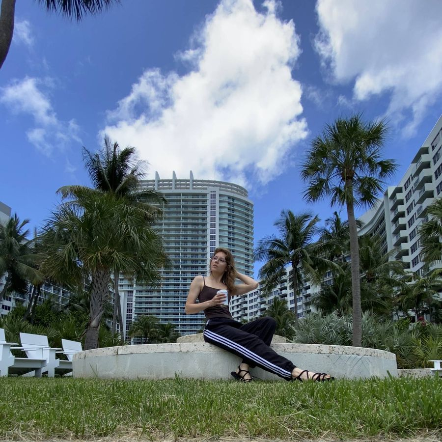
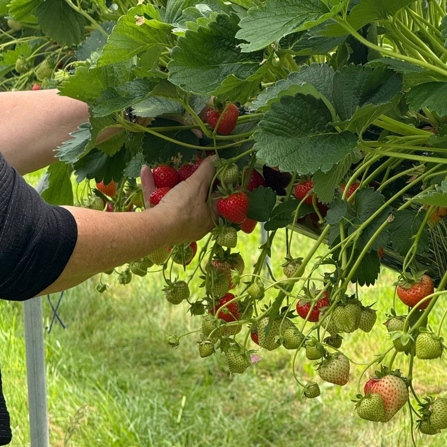
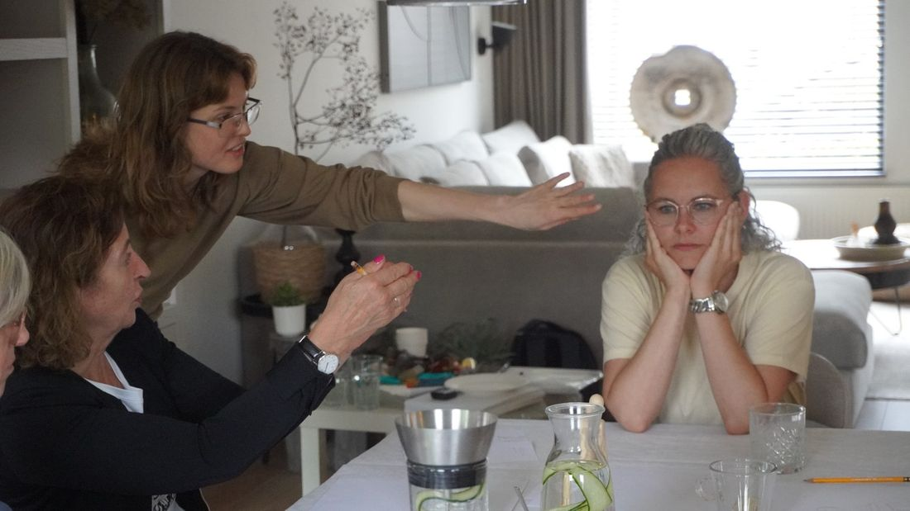

Over deze Workshop
Betere foto's met uw eigen telefoon
U heeft geen dure camera nodig om mooie foto's te maken. Met de telefoon in uw broekzak en een paar slimme tips maakt u al foto's waar u versteld van staat. Tijdens deze workshop ontdekt u hoe u licht, compositie en standpunt gebruikt om van een gewone foto een plaatje te maken.
Onze ervaren makers laten u stap voor stap zien hoe het werkt en geven u tips en trucs die u direct toepast. Zo ontdekt u alle kneepjes van het vak, terwijl u in een gezellige sfeer samen aan de slag gaat.
Portretten en Stillevens
Tijdens de workshop gaat u onder andere aan de slag met:
 Portretfoto's van elkaar
Portretfoto's van elkaar Stillevens van objecten
Stillevens van objecten Werken met licht
Werken met licht Compositie en standpunt
Compositie en standpunt
Bij portretten leert u hoe u iemand op zijn mooist en meest natuurlijk vastlegt. Bij stillevens maakt u sfeervolle foto's van objecten, van een kopje koffie tot een boeket bloemen.


Uw Eigen Fotograaf
Mooie foto's van uzelf, zonder dat iemand anders de telefoon vasthoudt? Dat leert u ook. Wij laten u zien hoe u uw telefoon tactisch neerzet: op welke hoogte, onder welke hoek en op welke afstand, zodat u zelf mooi in beeld komt. Met de zelfontspanner of serie-opnamen maakt u daarna in alle rust de foto die u voor ogen heeft.
Handig op vakantie, als u alleen op pad bent, of gewoon voor een mooie foto voor uw profiel. En het geeft verrassende resultaten: een telefoon laag bij de grond maakt van een gewone plek ineens een indrukwekkend decor.
Op een locatie naar uw keuze
Deze workshop geven wij op een plek die bij u past: bij u op kantoor, buiten in de natuur, in de stad of in ons eigen atelier in de Betuwe. Elke locatie heeft zijn eigen licht en sfeer, en die gebruiken wij juist voor mooie foto's. Vermeld in uw aanvraag waar u de workshop wilt houden, dan denken wij graag met u mee.
 Creatieve Vrijheid
Creatieve Vrijheid
Geen ervaring nodig. Onze workshops zijn ontworpen voor deelnemers van alle niveaus.
 Uw Eigen Telefoon
Uw Eigen Telefoon
U werkt met de telefoon die u al heeft, zodat u alles wat u leert meteen thuis kunt toepassen.
Mee Naar Huis
U gaat naar huis met uw eigen mooiste foto's, en met tips die u nog jaren gebruikt.
 Samen Creatief
Samen Creatief
Fotografeer elkaar in een ontspannen, gezellige sfeer, ideaal voor groepen en feestjes.
Wat Maakt Deze Workshop Bijzonder?
Wat u leert, gebruikt u elke dag: op vakantie, op een verjaardag of gewoon thuis aan tafel. Bovendien fotografeert u elkaar, en dat zorgt voor veel plezier en mooie herinneringen aan een gezellige dag. Of u nu op zoek bent naar een origineel teamuitje, een vrolijk vrijgezellenfeest of gewoon een ontspannen middag: deze workshop biedt alles.

 Praktische Informatie
Praktische Informatie
De workshop Fotoshoot met Telefoon in het kort:
- Duur: 2 uur
- Professionele begeleiding
- Inclusief materialen (voor ieder wat wils)
- Voor beginners en gevorderden
- De kunstenaar maakt sfeerfoto's en een groepsfoto na afloop
Neem uw eigen telefoon mee, met een volle batterij en genoeg ruimte voor nieuwe foto's. De workshop kan voor groepen worden georganiseerd, op een locatie naar uw keuze of in ons eigen atelier in de Betuwe. Voor meer informatie over data, prijzen en het reserveren van uw plaats, neem contact met ons op. Wij beantwoorden graag al uw vragen!
Klaar om te fotograferen?
Reserveer nu uw plek en leer prachtige foto's maken met uw eigen telefoon. Wij helpen u graag met alle informatie over beschikbare data en prijzen.